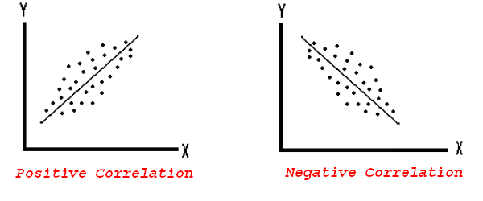
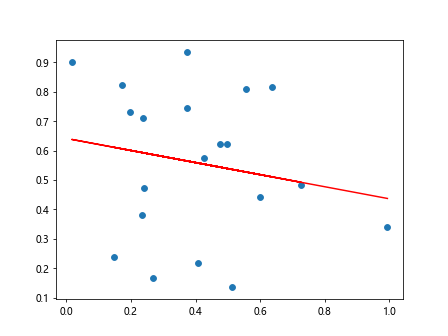
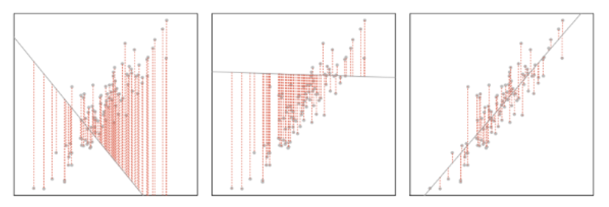

Introductory Statistical Inference
Module 4 (Section 1: Core Statistical Methods)
Preface
Statistics allows us to describe relationships between variables, infer beyond samples, and provides the basis for causal inference. However, to utilise common statistical techniques such as regression or quasi-experimental techniques, we first need to understand statistical inference. This module starts off with an introduction to sampling and inference, then discusses hypothesis testing, and finishes with discussing correlation.
Prerequisites: Section 0 (Or Equivalent)
Chapter 1: Statistical Inference
1.1: Samples and Population
In political science and the social sciences, we are often interested in studying large groups of people and entities. For example, we might be interested some feature regarding all people in a country, such as the average income, or average working hours, or average education level.
However, if we are dealing with large population sizes, it is often impossible to ask every single individual in the population. For example, if we wanted to study the average educational level of the UK, we would need to ask nearly 70 million people. This is completely impractical.
A sample is a subset of a population, where ideally, the sample can tell us something about the population. If our sample can reflect the greater population, then we can use the sample in our study, instead of the large population.
Sampling is the process by which we select a sample from a larger population. Like I just mentioned, we want the sample to be representative of the larger population, so that we can use the sample to make claims about the population.
To make sure the sample is representative of the population, we need to determine is a given sample is a good sample or a bad sample. The quality of sample depends on two major factors:
- The sampling procedure which we decide to implement
- Luck
We will go back to luck in the future sections (hypothesis testing allows us to deal with that issue). Now, let us focus on sampling procedure.
The gold standard of sampling procedure is a random sample - where individuals in the sample are selected at random from the population. This is because in a random sample, every possible individual has an equal chance of being selected, and thus, the resulting sample is likely to be reflective of the common traits of the population.
1.2: Central Limit Theorem
Before we introduce the Central Limit Theorem, we need to explain a distribution of sample means.
Imagine that we take a random sample from a population. Then, we find the mean of the variable we are interested in the sample. That is a sample mean.
Then, let us take another sample from the same population, and find the mean. This will be slightly different than the first sample, since we are randomly sampling. That is another sample mean.
We keep taking samples from the same population, and getting more and more sample means.
Now, let us plot all our sample means into a “histogram” or density plot. The \(x\) axis labels the possible sample means values, and the \(y\) axis is how frequently a specific sample mean occurs. We will get a distribution, just like a random variable distribution.
That distribution is the distribution of sample means - it basically measures the frequency of different sample means that we get, given we keep drawing samples from the same population and calculating their means.
The Central Limit Theorem states that the distribution of sample means of a variable, will be distributed in a approximately normal distribution. This is regardless of the variable’s population distribution shape.
- Essentially, no matter what distribution the population takes, if we take enough samples, the sample means plotted in a distribution will resemble a normal distribution.
There are a few criteria for the Central Limit Theorem to be true:
- The sample size (of the individual samples) should be at least 30
- Sample independence - one sample’s results should not affect other sample’s results
- Samples must be randomly sampled
There are a few additional points:
If the sample size condition is not met, but the population is normally distributed, we can still assume that central limit theorem occurs
If the sample size condition is not met, and the population is not normally distributed, we cannot use central limit theorem. The t-distribution may be of more use here.
The Central Limit Theorem is arguably, the most important part of statistical inference. Why? If we recall from Module 3, Chapter 3, Lesson 5, the normal distribution has some key properties, which are very useful for statistical inference purposes.
If we recall, the normal distribution has the 68-95-99.7 rule (see Module 3, Chapter 3, Lesson 5 for a refresher)

Since the distribution of sample means tells us the probability of getting some sample mean, we can now tell how likely a sample mean is to occur if a sample was drawn from the population.
This goes back to the “luck” aspect of sampling. What if we are unlucky in sampling, and end up randomly drawing all the tall people? All the smartest people?
Well, we can actually know how likely that we would pick such a sample!
Just use the distribution of the sample means, and since it is normally distributed, we can find how many standard deviations it is from the mean, and thus, calculate how likely that sample is to occur!
For example, if a certain sample mean is located 2 standard deviations above the mean, there is only a 2.14% chance that that sample mean would be that value or higher (see figure above)
Thus, Central Limit Theorem allows us to account for the luck aspect of sampling.
1.3: T-Distributions
The t-distribution is a distribution very similar to that of a normal distribution, with the bell-shape, however, it has a shorter peak, and thicker tails.. It is basically a normal distribution, but designed to account for smaller sample sizes
T-distributions are used when our sample size is too small to meet the Central Limit Theorem, and our population underneath is not normally distributed. T-distributions are also used in the t-Difference of Means test, which we will explore later.
Unlike the normal distribution, which has the parameters of mean \(\mu\) and standard deviation \(\sigma\), the t-Distribution only has one parameter - degrees of freedom \(DF\)
- We will talk about how to calculate \(DF\) when we use the t-distribution in statistical tests. It is usually the number of observations in a sample \(n\) minus the number of variables involved (typically 1 or 2).
Just know in general, when \(DF\) becomes higher, the tails become thinner and the peak becomes higher. When \(DF\) becomes lower, the tails become thicker and the peak becomes lower.
- Around 30 \(DF\), the t-test approximates a standard normal distribution. This is why we generally switch the Central Limit Theorem to the t-Distribution under 30 sample size.
Chapter 2: Hypothesis Testing
2.1: Hypothesis Testing
Hypothesis testing allows us to test a hypothesis (the hypothesis we are interested in is called the alternate hypothesis \(H_1\).
We always start with the null hypothesis. The null is what we call the assumption that there is no difference/relationship - it is basically the “status-quo”. It is often labeled as \(H_0\)
The alternate hypothesis is the hypothesis we are trying to prove. It is often labeled as \(H_1\)
We assume the null hypothesis (status-quo) is true, unless we are 95% confident we can reject the null hypothesis, and only then, can we conclude that the alternate hypothesis (the one of interest to us) is true.
We will discuss what 95% confidence means when we do a difference-of-means test later.
Of course, with 95% confidence, we will have errors. There are two types of errors:
- Type-I error: this is when the null hypothesis is actually correct in the real world, but we accidentally reject it.
- Type-II error: This is when the null hypothesis is actually wrong in the real world, but we accidentally do not reject it
You might ask, why 95%? Well, it is just convention in the social sciences. Other fields may have different confidence levels - for example, in drug trials, it is much much higher - since it would be a disaster to approve a faulty drug.
- There is nothing special about 95%, in fact many argue it is a bad measure. After all, what makes something magically better being 95% confident than 94% confident?
2.2: Difference of Means Test
Chapter 3: Correlation
3.1: Covariance
In political science, we are often interested in the relationship between two variables. For example, are oil producers more likely to be democratic? Are more educated voters more likely to turn out and vote?
The relationship between two features, also called correlation, is the extent to which they tend to occur together.
A positive correlation/relationship is when we are more likely to observe feature \(Y\), if feature \(X\) is present
A negative correlation/relationship is when we are less likely to observe feature \(Y\), if feature \(X\) is present
No correlation/relationship is when we see feature \(X\), it doesn’t tell us anything about the likelihood of observing \(Y\)
Graphically, a positive and negative correlation are as follows:

Covariance is a way to measure to relationship between two variables. Essentially, covariance is the extent that \(X\) and \(Y\) vary together. Covariance is calculated as follows:
\[ Cov(X,Y) = \sigma_{XY} = \frac{\sum (X_i - E[X])(Y_i - E[Y])}{n} \]
These are the parts of the equation:
- In our data, we have many different pairs of data points \((X_i, Y_i)\)
- \(X_i\) is some point of \(X\), while \(E[X]\) is the mean of \(X\). Same goes for \(Y_i\) and \(E[Y]\)
- Thus, \(X_i - E[X]\) is the distance between any point \(X_i\) and its mean \(E[X]\). Same goes for \(Y_i - E[Y]\)
- \(n\) is the number of observations in our data.
We can interpret the sign of the covariance: if it is positive, we have a positive relationship. if it is negative, we have a negative relationship.
However, we cannot interpret the size of the covariance. This is because covariance is sensitive to the way we measure \(X\) and \(Y\)
- For example, let us consider that \(X\) is a measurement of age. We could measure age in years, or months. But by measuring in months, we are increasing all values of \(X\) by 12 times. Yet, the data, and its variation are still exactly the same - we just changed the scale. However, covariance will also increase.
3.2: Correlation Coefficient
Like we just mentioned, the magnitude of covariance cannot be measured. However, we can “normalise” covariance, so that measurement scale does not impact the value. We do this by dividing the covariance by the standard deviation of \(X\) multiplied by the standard deviation of \(Y\)
This standardised version of covariance is called the correlation coefficient, which is always between -1 and 1. Thus, this allows us to measure the strength of a correlation. The formula is as follows:
\[ Corr(X,Y) = r = \rho= \frac{Cov(X,Y)}{\sigma_X \sigma_Y} \]
Just like covariance, the sign of the correlation coefficient tells us the direction of relationship between \(X\) and \(Y\)
However, we can also interpret the strength of a correlation through the correlation coefficient
Closer to -1 or 1 means a strong negative/positive correlation
Closer to 0 means a weaker negative/positive correlation
Below is a figure of different plots. Plots \(a,b,c\) have positive correlation coefficients, and plots \(d,e,f\) have negative correlation coefficients. Plots \(a\) and \(d\) have strong correlations (close to ±1), plots \(b\) and \(e\) have moderately strong correlations (close to ±0.5), and plots \(c\) and \(f\) have weak correlations (close to 0)

There is one extension of the correlation coefficient - called the r-squared value. R-squared is exactly what it sounds like - the correlation coefficient squared. Since it is squared, the r-squared value is always between 0 and 1.
The r-squared is useful because it gets rid of the sign on the correlation coefficient, and thus, only shows the strength of the relationship between two variables. More accurately, the r-squared value shows the percentage of variation of \(Y\) explained by \(X\)
The r-squared value will become especially important as we dive into regression - especially multivariate models, since the r-squared value can tell us generally how “good” our models are at predicting \(Y\) from \(X\)
3.3: Best Linear Predictor
While correlation coefficient tells us the strength of the correlation, it doesn’t tell us anything about the magnitude of the relationship. For example, if \(X\) increases by 1, how much does \(Y\) increase by?
- Magnitude is quite important - after all, even if two values are very highly correlated, if an increase in \(X\) only leads to a miniscule increase in \(Y\), this might not be very important for understanding the world
A way to estimate the magnitude of the relationship between \(X\) and \(Y\) is the best linear predictor. The best linear predictor is a linear function \(Y = \alpha + \beta X\) that best predicts \(Y\) with values of \(X\). Essentially, it is a best fit line to our correlation
- If you need a refresher on how linear equations work, see Module 1, Chapter 1, Lesson 3
For example, the figure below shows a best fit line for a set of data:

We know the best fit linear prediction line takes the form \(Y = \alpha + \beta X\). But what value should the y-intercept \(\alpha\) and the slope \(\beta\) be?
- For example, in the figure above, why not draw a line that is slightly steeper? or draw a line a little lower?
Well, the way we find the best fit line is quite intuitive - we want to reduce the error between our line, and the actual data points.
The “error”, also called the residual, is basically, how far away is our line from the points in the data. It is the actual \(Y\) value from our dataset, minus the predicted \(Y\) value from our linear equation for any given point \((x, y)\). Mathematically, it is \(y_i - \hat{y}_i\). For example, take the figure below, which shows the errors in red for every point in a dataset for 3 different best fit lines:

Essentially, we want to find the y-intercept \(\alpha\) and slope \(\beta\) of a linear line that minimises the sum of squared errors - which is exactly what it sounds like: every error squared, then sum of all of the squares. Sum of Squared errors is also called the Residual Sum of Squares, and mathematically:
\[ RSS = \sum(y_i - \hat{y}_i)^2 \]
The reason we square the errors is to get rid of the negative signs. This is because, the negative errors will simply cancel out the positive errors. But, we don’t want that - we want some measure of the total amount of error. Thus, the square makes all the negatives positive, which allows us to measure the magnitude of the errors, not the direction.
Well, now that we know we want to minimise the sum of squared errors, how do we actually get the slope \(\beta\) and y-intercept \(\alpha\) for our linear model? We of course, could try thousands/millions of different lines, and see which one has the lowest sum of squares
Or, we can use a mathematical estimator to estimate the optimal \(\beta\) and \(\alpha\). The most common estimator of the slope \(\beta\) and y-intercept \(\alpha\) is called the Ordinary Least Squares (OLS) Estimator. We will start with this estimator, and the linear model as a whole, in the next module.